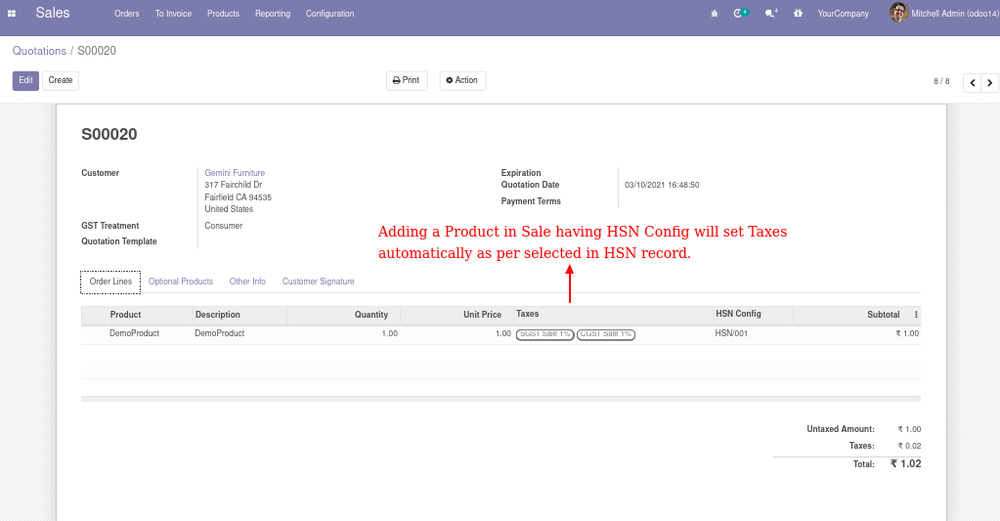
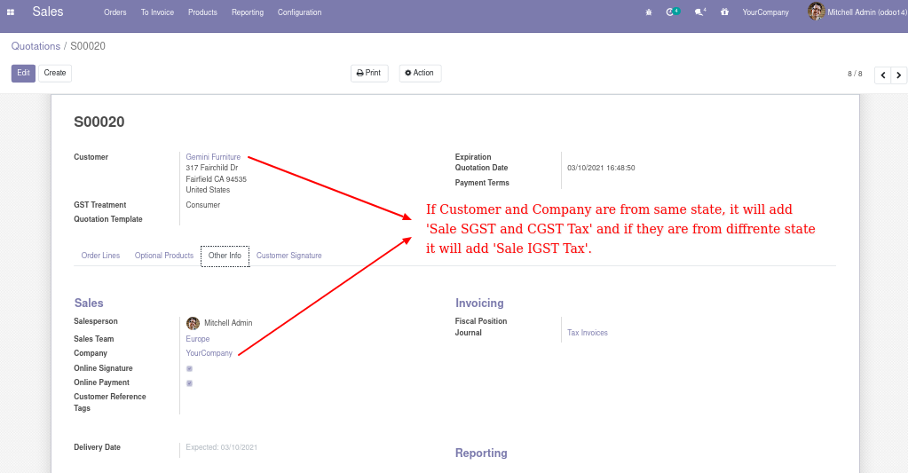
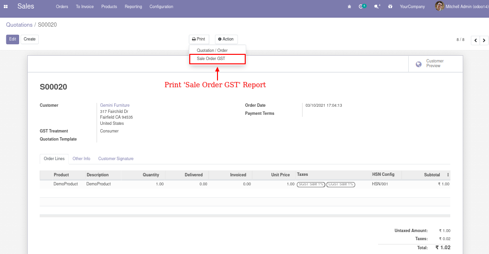
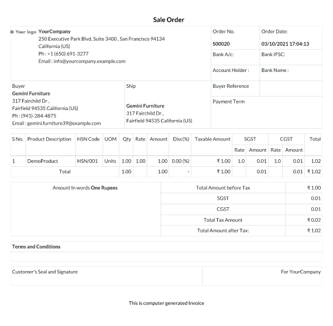
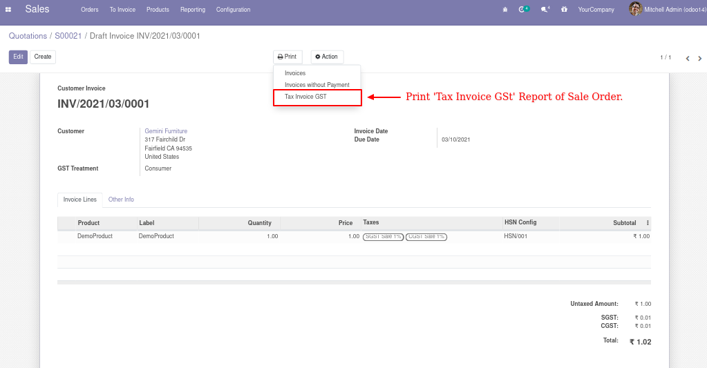
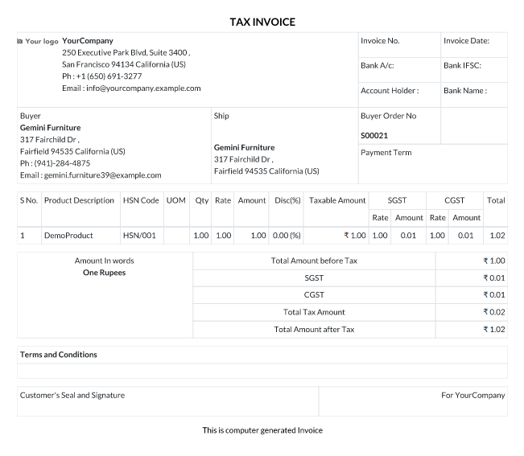

HSN on Sale
Add product on Sale Order Lines.

Selection of Tax based on state of Customer and Company.

'Sale Order GST' Report on Print menu.

Sale Order GST Report.

Print Invoice report of sale order form 'Tax Invoice GST' from Print menu on Invoice.

Tax Invoice GST Report for Sale Order.
